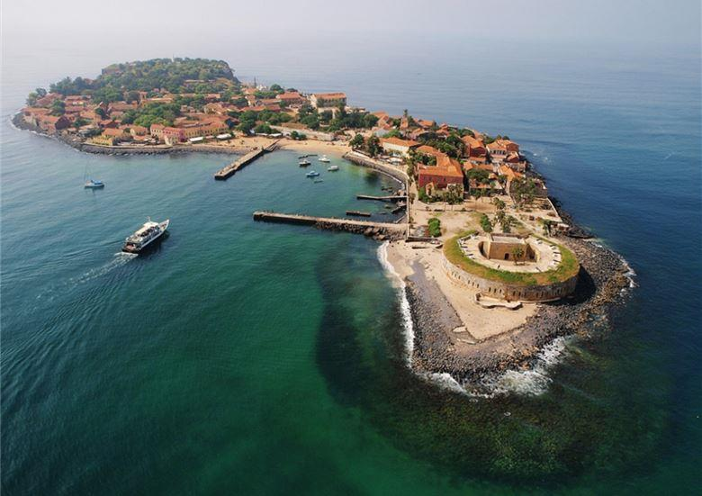
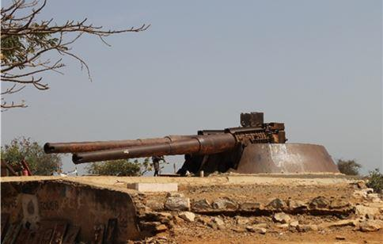
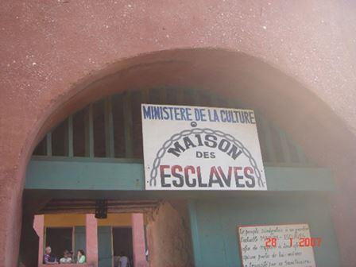
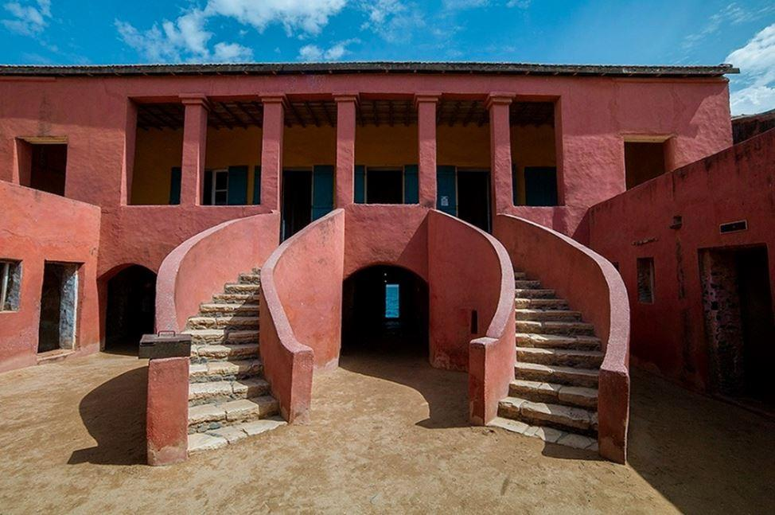
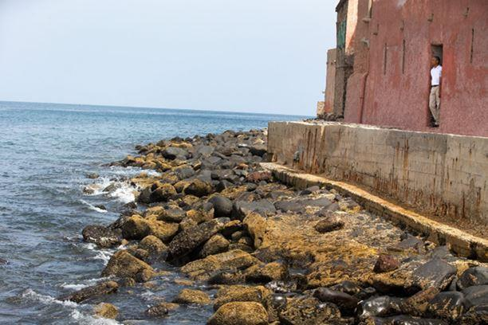
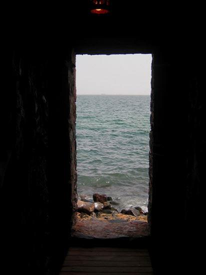
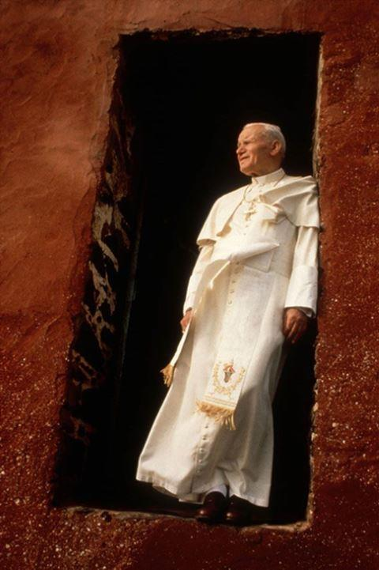
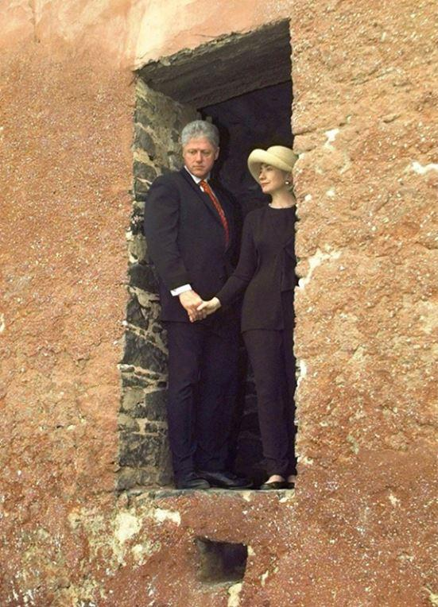
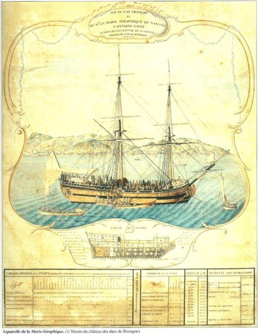
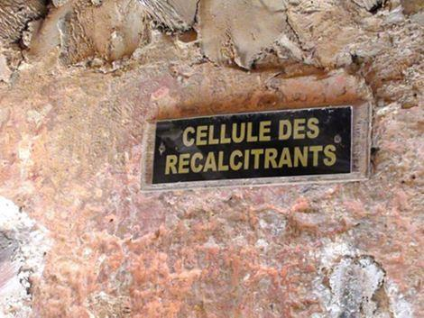

C’est une île au large de Dakar, pas très grande, et pas bien loin non plus de la côte, un mile nautique au large de la sortie du port.
C’est aussi l’excursion à faire dans cette capitale poussiéreuse qui a bien perdu de son lustre d’antan : un embarcadère, un petit village, d’intéressantes fortifications avec de splendides canons* de marine qui repoussèrent les Anglais et de Gaulle en septembre 1940, une belle vue sur l’océan…. et une maison.

L’excursion à Gorée ne se conçoit pas sans un passage obligé à ce qui s’appelle « la maison des esclaves », une agréable bâtisse que l’on vous présente comme ayant servi à ce commerce, avec les bureaux et les logements des négociants à l’étage, et au rez-de-chaussée les cachots de ces pauvres gens.
Un plaisant escalier à double volée dans la cour, un guide volubile, vous écoutez tout cela sagement, et vous pénétrez à sa suite dans ce sombre sous-sol.
Là au bout d’un couloir – nous sommes en 1984, ma première visite dans ce lieu alors peu connu - un peu de clarté, et c’est une porte, LA porte, que l’on vous présente comme étant le point d’embarquement des esclaves vers les Amériques.
Des navires venaient donc à l’extérieur tout contre le mur, se collaient à la paroi, et on transférait alors les captifs sur ces bateaux. L’image est pleine de gravité et de signifiant – la porte, l’horizon lointain, cette triste histoire, combien sont-ils passés, en route vers les Amériques, voilà qui est matière à dissertation. Je passe une tête, regarde un peu…. et là pas de chance, je navigue un peu, j’ai quelques connaissances maritimes, y compris en ancienne marine à voile (qui connait le nom des trois mâts ? qui sait distinguer une corvette d’une goélette ? qui a lu tous les livres de Paul Chack et de Moitessier ? qu’est-ce qu’un étambot ?) et l’évidence me tombe dessus : jamais aucun navire n’a accosté là !
Nous sommes à une trentaine de mètres de l’eau, déjà à trois mètres au-dessus de la surface, et c’est toute une chaussée de rochers qui nous sépare des flots. Et nous sommes face au sud-ouest, vers les Amériques certes, mais face à la houle du large – le petit port de l’île se trouve en zone abritée naturelle, de l’autre côté, face à Dakar….. et une porte pour embarquer sur un navire, cela existe sur des canaux, des rivières, dans d’anciennes structures des siècles passées (Venise, Vaison-la-Romaine, douves d’un château…) mais c’est pour monter dans un canot, pas sur un navire de haute mer. Il faut vraiment ne rien y connaître pour avaler ces salades, voilà ce que se dit le jeune homme que je suis en 1984.
Je repartais donc un peu perplexe, et rangeais cela dans mes souvenirs de voyages – j’étais jeune et occupé ailleurs. J’observais quand même au fil des années que tout ce que la planète comptait de leaders venait en pèlerinage à cet endroit que j’avais donc connu, et je revoyais avec amusement des images du guide dont la faconde m’avait à l’époque amusé.
Ainsi défilèrent tous les présidents américains, français, les premiers ministres anglais et français de nouveau, les sommités de l’ONU, le monde des artistes, chacun prenant un air de circonstance. Dakar étant devenue la base africaine de nombreuses organisations internationales, la visite d’un responsable ne s’y conçoit plus sans un passage obligé par la maison rose – avec obligation de photo de la personnalité à la porte, l’air pensif et regardant l’horizon. Je remarquais qu’au fil des années ces visites se faisaient de plus en plus nombreuses, et la repentance de plus en plus manifeste, de tous à propos de tout. Face à d’autres pays plus impliqués à l’époque dans la traite négrière (le Ghana et l’Angola, notamment) mais manquant d’attraits et d’un gouvernement commercialement affuté, la manne des touristes américains en quête de racines se déversait sur le Sénégal, même si ce pays avait finalement fourni bien peu de déportés vers le continent américain. Je conservai ma suspicion…..
La vie, un nouveau métier, des liens familiaux dans la diplomatie me donnèrent l’occasion de retourner plusieurs fois dans cette capitale sénégalaise, une vingtaine d’années après, et ce jusqu’à aujourd’hui. L’aéroport au milieu des baobabs est maintenant au sein d’une lèpre de béton, la plage des Mamelles a perdu tout son charme, les grands hôtels historiques des années 70 ont fermé (le Club Méditerranée des Almadies, le légendaire Méridien de N’Gor…)
L’île de Gorée quant à elle est toujours l’excursion que l’on me propose invariablement (il y a aussi un « lac rose » à une heure voiture à travers les bidonvilles, on sort du véhicule, ah oui il est rose, on prend une photo, et puis…. bon ben, on y va ?) Va donc pour l’île… et la maison des esclaves. La porte est toujours là - à quoi servait-elle au-dessus des rochers battus par les vagues ? j’ai bien une petite idée, mais je la garde pour moi. Il ne me viendrait pas à l’esprit d’exprimer mes doutes, pourquoi embarrasser ce guide qui nous raconte son histoire – sur un sujet qui n’est pas franchement drôle dans son ensemble, même s’il n’a rien à voir avec l’endroit, j’en suis de plus en plus persuadé. Surtout quand on nous dit que des millions de personnes sont passées par cette porte… faites le calcul vous-même, ça ne passe pas ! Il semble qu’au fil des années quelques doutes aient été émis (une recherche internet me l’a confirmé, encore que l’aspect maritime me soit resté personnel) Doutes aussitôt balayés par les pontes… et ceux qui profitent de la manne. On me dira sur place que des passerelles en bois maintenant disparues avaient été construites pour accéder aux bateaux – mais pourquoi auraient-ils fait ça, au risque de talonner sur les rochers, alors que le port naturel est de l’autre côté ? il n’existe de surcroit aucun exemple, nulle part, de ce genre d’appontements sur une côte au vent. Puis ce sera un collègue éthiopien qui me sortira que c’est la dérive des continents qui aurait fait remonter les rochers (ou alors la poussée tectonique, peut-être même le réchauffement climatique, je ne sais plus)
Arrêtons là – la côte africaine est cernée par la barre, ces rouleaux permanents sur une côte linéaire, telle le littoral des Landes, et il n’y a pas d’abri sur des centaines, voire des milliers de kilomètres, sinon les estuaires de quelques rivières, surtout s’ils s’élargissent en lagunes (environs d’Abidjan, San Pedro) Les navires arrivaient donc après une éprouvante traversée (dont tout le monde a oublié la difficulté, sans radars, radios, cartes fidèles, moyens de navigation) et le défi était de retrouver l’entrée de ces mouillages naturels sans s’échouer, pour rejoindre les compatriotes qu’on avait laissés là pour des mois, dans un fort minuscule, une garnison réduite, exposés aux fièvres et à la nuit africaine… et sans espoir de secours immédiat, autant pour le navire que pour la garnison, si les choses tournaient mal.

Brick négrier
Une fois l’ancre tombée dans cet abri naturel, on soufflait un peu, des pirogues venaient aborder, qui ravitaillaient le navire, emmenaient les hommes à terre, et finissaient donc par conduire à bord ce qui devait être embarqué …. Bien triste certes, mais enfin on a connu le servage, la question et le supplice de la roue jusqu’à une époque avancée chez nous, alors je ne vais pas me couvrir la tête de cendres. Revenons à l’ile de Gorée : il y avait un abri naturel à côté (là où est le port de Dakar maintenant, comme c’est curieux) et on ne voit pas pourquoi, non vraiment pas, on aurait embarqué ces pauvres gens pour les débarquer aussitôt sur cette poussière d’île, où le ravitaillement était rare, l’eau surtout … il n’y avait pas de quais dans les ports d’Afrique à cette époque, donc on minimisait les ruptures de charge, c’est aussi simple que ça. La rivière Gambie, l’estuaire de la Guinée portugaise plus au Sud eurent, c’est reconnu, beaucoup plus d’importance pour le commerce de l’époque, que ce qui devait devenir Dakar, perdu au bout de son promontoire, et donc moins facile d’accès pour les caravanes des tribus africaines, qui arrivaient de l’arrière-pays pour camper au final avec leur butin humain sur le bord des eaux calmes de l’estuaire déjà cité.
Finissons sur quelques anecdotes de la visite : la plaque où étaient listées les familles d’armateurs français plus ou moins responsables, de Bordeaux, Nantes, la Rochelle… a disparu, dommage, on y retrouvait des noms connus (une jeune fille à mes côtés y lut en 84 le nom de famille d’une de ses camarades de classe à Toulon, il y a comme ça des dynasties chez ceux qui naviguent)
Depuis 1984, chaque pièce a maintenant une petite plaque, qui explique ce à quoi elle servait jadis : détention pour les hommes, les femmes, les enfants – encore une fois, manifestement les servants des maitres qui logeaient à l’étage, et rien d’autre, sauf si on n’y connait rien en architecture (après avoir déjà été ignare en navigation) Le dessous de l’escalier s’est ainsi vu baptisé "cellule des récalcitrants" et sous prétexte que Mandela y avait passé un quart d’heure pour en ressortir en pleurant, il m’a fallu pour faire plaire au guide me contorsionner pour rentrer dans ce placard aux balais, et y rester un peu par correction….
Mais que dire ? pourquoi engager une polémique avec ce brave homme ? Terminons avec la conclusion qui en est désormais tirée avec plus ou moins de conviction, par les intellectuels africains qui ont su sagement prendre un peu de recul : la cause est là, elle mérite certes mieux que cette gentille histoire de maison un peu fantaisiste, mais où est le mal finalement ? partout ailleurs sur la côte africaine, baraquements et campements de cette sombre époque ont disparu - ici le symbole est visible, on en avait sans doute besoin, et les visiteurs l’ont créé au fil du temps, comme le monument de Lady Diana au pont de l’Alma qui n’avait rien à voir avec l’affaire mais que les pèlerins se sont appropriés. Une fois de plus, l’inculture conduit à la crédulité, L’important est juste de savoir ce qu’on vous raconte, ici comme ailleurs.
V.G.
(*) une autre légende que l’on se répète sur place de bouche à oreille depuis des années, est que ces canons servirent au tournage du film « les canons de Navarone ». Pour avoir vu le film plusieurs fois, je peux dire qu’il n’en est rien - donc une intoxication de plus. Je laisse à d’autres le soin de faire un article sur ce second sujet !
Partager cette page